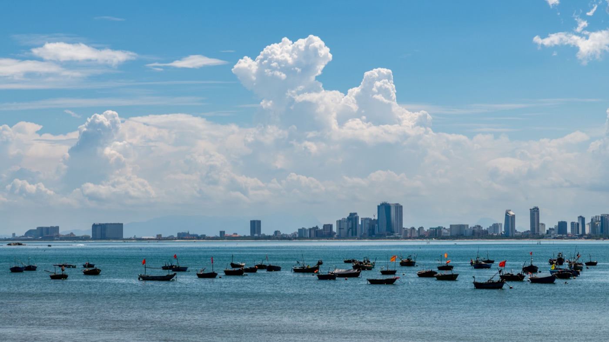

Усталость в дальней поездке на байке: когда отдыхать
На байке усталость накапливается незаметно: солнце, ветер, шум, постоянный контроль потока и неподвижная посадка требуют внимания. Опасность начинается не тогда, когда сил совсем нет, а раньше — когда решения становятся медленнее и водитель перестаёт замечать собственные ошибки.
Планируй запас, а не рекорд
Навигатор показывает расчётное время движения, но не учитывает жару, дождь, заправку, поиски дороги и отдых. Добавляй к плану свободное время и заранее отмечай безопасные места для остановки. На незнакомом маршруте лучше приехать раньше темноты, чем пытаться наверстать задержку скоростью.
Первые признаки усталости
- частая зевота и желание сменить положение;
- напряжённые плечи, кисти или затёкшая спина;
- пропущенный поворот либо поздно замеченный знак;
- слишком близкая дистанция без причины;
- раздражение на обычные действия других водителей;
- последние километры плохо запомнились.
Даже одного такого сигнала достаточно, чтобы спокойно остановиться. Кофе и громкая музыка могут на время изменить самочувствие, но не заменяют отдых.

Как делать остановку
Съезжай только на видимую твёрдую площадку, полностью убранную от потока. Заглуши двигатель, сними шлем, выпей воды и немного пройдись. Проверь маршрут, погоду впереди и состояние байка. Если сонливость остаётся, продолжать поездку нельзя: выбери полноценный отдых или другой транспорт.
Жара и обезвоживание
Во влажном климате потерю жидкости легко недооценить. Вези воду в закрытой бутылке и пей на остановках, а не во время движения. Лёгкая закрытая одежда, перчатки и прозрачный визор защищают от солнца и пыли. При слабости, головокружении или спутанности действий остановись в прохладном месте и обратись за помощью, если состояние не проходит.
Проверь и байк
Во время перерыва посмотри на шины, проверь, нет ли течей и запаха перегрева, убедись, что багаж держится прочно. Для 50сс особенно важно не пытаться часами ехать на пределе возможностей двигателя. Спокойный темп и остановки полезны и водителю, и технике.
Когда разворачиваться
Возвращение — нормальное решение, если погода ухудшается, маршрут оказался сложнее, пассажир устал или дорога займёт больше светлого времени, чем ожидалось. Цель поездки не важнее безопасного возвращения. Сообщи близким об изменении плана и не обещай точное время, которое заставит торопиться.
Короткий вывод
Останавливайся при первых признаках снижения внимания, а не после ошибки. Планируй время, воду и место отдыха заранее. Перед длинным маршрутом используй наш чек-лист проверки байка и прочитай статью про езду в жару.